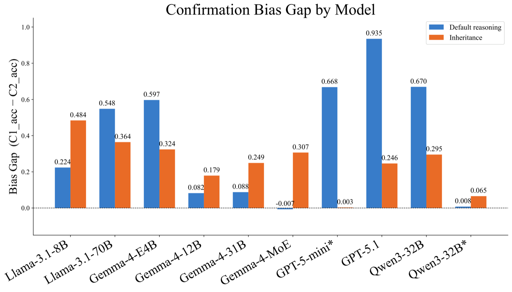
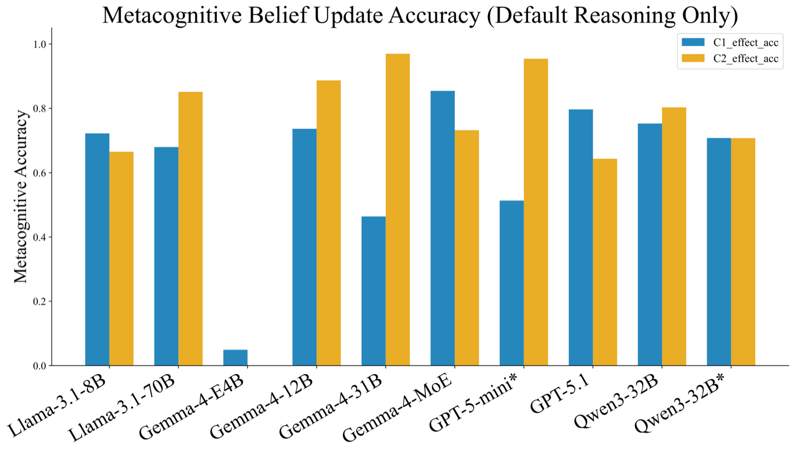
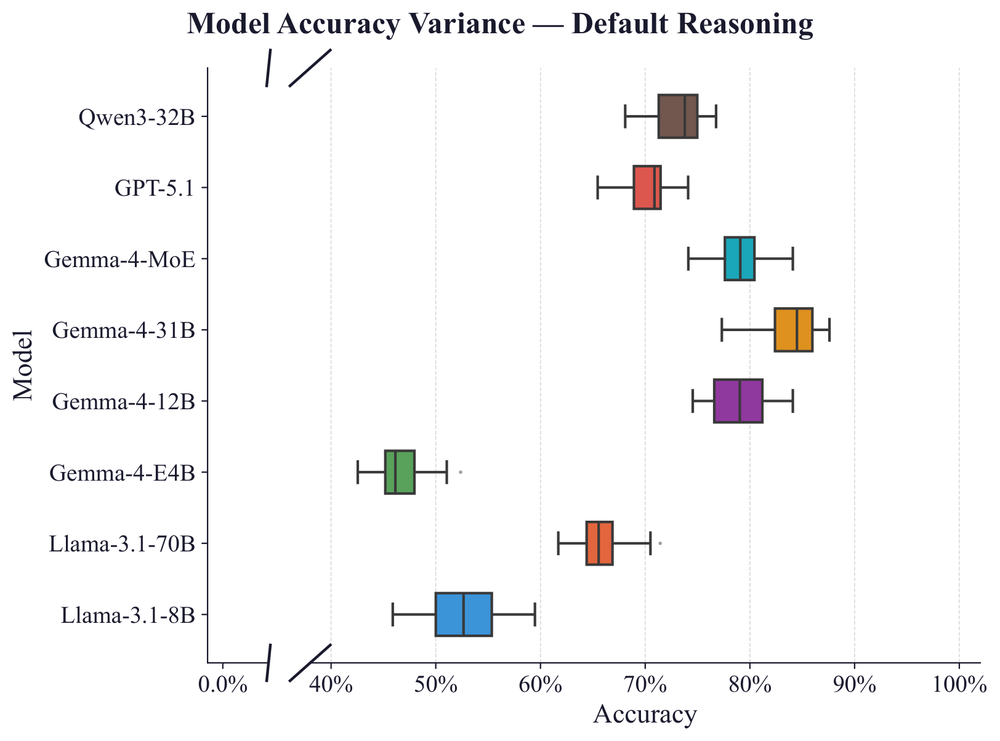

DeReLab generates multi-turn conversations from formal reasoning graphs whose ground truth is computed by a skeptical path-relation algorithm, not a heuristic. That lets us measure, precisely, when and how language models fail to revise their beliefs under incongruent evidence.
Static benchmarks can leak into training data and reward pattern matching over genuine reasoning. DeReLab instead builds a fresh directed reasoning graph for every example, marks some edges as defeasible updates revealed one at a time, and asks a skeptical path-relation algorithm (PMPM) to recompute the correct answer after each reveal. The model is scored against that formal answer, not a human label.
Each topology is generated at easy and hard difficulty, producing six reasoning conditions per model.
A linear chain of properties with defeasible updates, distractor attributes, and source-priority conflicts between named sources.
A class hierarchy where properties propagate down one lineage — the simplest inheritance structure, used as a controlled baseline.
A stochastically-grown taxonomy tree where updates on one branch can, or deliberately cannot, affect a sibling branch. Explore this one live in the simulator.
17 of 19 model–reasoning-type cells show statistically significant bias after Holm–Bonferroni correction, ranging from BiasGap = 0.08 (Gemma-4-12B) to 0.94 (GPT-5.1).
BiasGap measures how much less accurate a model is on incongruent updates (which should overturn its current answer) than on congruent ones (which confirm it). Gemma-4-12B shows a small but reliable gap, while GPT-5.1 reaches near-total incongruent failure — a congruent accuracy of just 3.5% means the model almost never correctly revises from yes to no when faced with a weakening update. Only two cells are non-significant after correction: Gemma-4-MoE on default reasoning and Qwen3-32B* on inheritance.

Confirmation bias gap (congruent accuracy − incongruent accuracy) per model and reasoning type.
Several models correctly label an update as weakening on the majority of incongruent turns yet almost never revise their entailment answer — e.g. GPT-5-mini: 95.4% effect accuracy vs. 20.3% entailment accuracy on the same turns.
Llama-3.1-70B shows the same pattern (85.1% effect accuracy vs. 14.9% entailment accuracy): both models correctly identify weakening on the majority of incongruent turns yet almost never revise their entailment answer accordingly. Gemma-4-31B presents the subtler end of the same pattern — the highest effect accuracy of any model (97.0%) alongside a high entailment accuracy (90.7%), for a smaller but still reliable dissociation. This know-but-don't-output pattern suggests confirmation bias operates as a belief-revision suppression effect: models correctly encode the evidential direction of an update but fail to propagate it to their entailment answer.

Effect-labelling accuracy on congruent (strengthening) vs. incongruent (weakening) turns, per model, default reasoning only. A large gap — high effect accuracy but low entailment accuracy on the same turns — is the know-but-don't-output signature.
Reversing question order (effect question first) collapses effect-labelling accuracy across every tested model, showing it was primed by prior engagement with the entailment question rather than reflecting standalone understanding.
We re-ran six models with the question order reversed — effect question before entailment. The confirmation-bias gap itself is robust to order (unchanged or larger for all six models), but C2-effect accuracy collapses everywhere it started high, and Gemma-4-MoE's apparent absence of bias in the standard order turns out to be a sequencing artefact: its BiasGap rises from −0.007 to 0.259 once the entailment question no longer comes first.
BiasGap (C1 acc − C2 acc) under the standard question order vs. the effect-question-first reversal, default reasoning, six models.
Qwen3-32B with extended thinking reduces default BiasGap from 0.67 to 0.008, though the benefit is only partial on inheritance reasoning (Gap = 0.065, not significant).
The standard (non-thinking) Qwen3-32B shows a default BiasGap of 0.670 — one of the largest in the evaluation. Qwen3-32B* (extended thinking) reduces this to 0.008, with the lowest anchoring rates of any model on both topologies. Gemma-4-MoE achieves near-zero default bias via a different mechanism, but its inheritance bias remains substantial (Gap = 0.307), showing that suppression does not automatically generalise across reasoning types. See the chart in finding 01 above for the full model-by-model picture.
On-path correct-answer confidence declines significantly with distance for most models under hard tree-inheritance conditions (Gemma-4-31B ρ = −0.298, Llama-3.1-8B ρ = −0.255).
When an update sits many reasoning hops away from the question being asked, most models become steadily less confident in the correct answer, even when that answer hasn't actually changed — the connection just gets harder to track the further away it is. This effect is strongest for Gemma-4-31B and Llama-3.1-8B, whose confidence erodes the most over long chains. GPT-5.1 is the one clear exception: its confidence in the correct answer actually grows with distance, suggesting it accumulates supporting evidence across a chain rather than losing track of it.
ICC = 0.949 across 20 independently seeded draws; coefficient of variation stays under 4% for five of eight models on both default and linear-inheritance conditions.
Kruskal–Wallis tests find no significant differences across the 20 seeds for any model–condition pair (all p > 0.06 after correction). The two models with higher relative variance — Gemma-4-E4B and Llama-3.1-8B — are also the lowest-accuracy models, where more room to fluctuate is expected; their absolute standard deviation is still small (≈0.05). A different seed would not change any model's accuracy category.

Accuracy variance across 20 independently seeded draws, by property-chain length, default reasoning. Overlapping bands across seeds indicate stable model behaviour rather than draw-specific artefacts.
Step through structure generation, population, natural-language verbalization, and staged skeptical reasoning — the exact pipeline used to produce the benchmark, running live in your browser.
@misc{sadhu2026derelabprobingdefeasiblereasoning,
title={DERELAB: Probing Defeasible Reasoning and Confirmation Bias in LLMs with a Generative Benchmark},
author={Jayanta Sadhu and Sayem Shahad and Kenneth Marino},
year={2026},
eprint={2608.30413},
archivePrefix={arXiv},
primaryClass={cs.AI},
url={https://arxiv.org/abs/2608.30413},
}